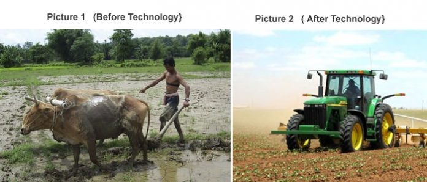

Modern Agriculture System
Technology has turned farming into a real business, now farmers have electrified every process, a consumer can place an order directly online, and the product will be transported from the farm to the consumer in time when it’s still fresh. This saves the farmer money and it cuts out mediators who tend to buy low from farmers and sell high to end consumers. Every farmer uses this technology in their own way. Some use it to create fertilizers, others use it to market their products, and others use it in production. So as a farmer, you have to specify what you need. Below is a summary on the use of Technology in agriculture:

Use of machines on farms: Now a farmer can cultivate on more than 2 acres of land with less labor, and can cut costs even more when they are looking for a used tractor and other harvesting technology, versus new equipment. The use of planters and harvesters makes the process so easy.
Modern transportation: This helps in making products available on markets in time from the farm.Modern transportation technology facilities help farmers easily transport fertilizers or other farm products to their farms, and it also speeds the supply of agricultural products from farms to the markets where consumers get them on a daily basis.
Irrigation of plants. In dry areas like deserts, farmers have embraced technology to irrigate their crops. A good example is in Egypt, were farmers use water pumps to collect water from river Nile to their crops. Most of these farmers grow rice which needs a lot of water, so they manage to grow this rice using irrigation methods enhanced by advanced technology. Advanced water sprinklers are being used to irrigate big farms and this helps the crops get enough water which is essential in their growth. Some farmers mix nutrients in this water, so also improves on the growth of these crops.